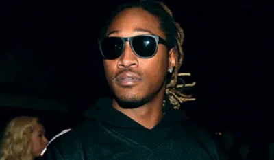

Future um dos maiores da decada!
Future é um Rapper americano ficou muito conhecido no começo da década de 2010 mas é influente até os dias de hoje tendo construido uma carreira sólida e conseguindo se manter influente até os dias atuais, é conhecido por ser um dos percusssores do gênero trap e ajudou a popularizar o autotune, pode-se dizer que Future, T-pain e Lil Wayne que popularizaram o autotune como é utilizado até os dias de hoje.
Vida antes da fama
Nayvadius DeMun Wilburn mais conhecido como Future nasceu em no dia 20 de novembro de 1983 em Atlanta Georgia, e estudou na escola Columbia High School.
Quando Future ja estava na adolecência sua mãe ficou muito preocupada com ele entrar na vida do crime pois ele tinha parentes proximos que ja tinham entrado nessa vida do tráfico de drogas, então sua mãe tentou manter ele na linha e não deixar ele ir por esse caminho, ela trabalhava de call center dos serviços de emergência dos EUA (911).
Mas para infelicidade da sua mãe na época ele acabou se envolvendo com os esquema de gangue que eram muito fortes na região e essa época ficou marcada por um acontecimento que ocorreu com o Future que quando ele tinha 15 anos ele acabou dando um tiro na própia mão, sua mãe que nao estava nenhum pouco feliz com que o filho andava fazendo pois sempre estava metido com problemas e brigas optou que não iria mais se desgastar com a vida que o filho estava levando e o expulsou de casa quando ele tinha 17 anos e ele acabou vivendo na rua até os 24 anos.
O começo da carreira
O começo da sua carreira ele começou com o nome de "Meathead" onde ele se apresentava com o grupo chamado de The Dungeon Family onde podemos citar aqui que dentre os vários podemos destacar Andre 3000 que fez muito sucesso com o "Outkast" e Rico Wade que era produtor e primo de Future, foi ele quem encorajou Future a seguir a carreira como rapper e dar um tempo da vida das ruas e assim foi feito , Future começou criando versos e letras para outros artistas inclusive um deles era o Ludacris, logo logo ele assinou com a gravadora "A1 records" do seu amigo Rocko.
De 2010 ao início de 2011, Future lançou uma série de mixtapes, incluindo 1000, Dirty Sprite e True Story. Este último incluiu o single "Tony Montana", em referência ao filme Scarface. Durante esse tempo, Future também fez parceria com o rapper Gucci Mane em seu álbum colaborativo Free Bricks, e co-escreveu e participou do single "Racks" de YC. Ele ganhou popularidade depois que suas músicas foram tocadas pelo DJ Esco no Magic City, um clube de strip em Atlanta considerado "o grande responsável por lançar as carreiras dos artistas".
Essa é a primeira vez em que o Future aparece em uma musica pela Dungeon family
No ano de 2012 Future se consolidou na cena fazendo grandes features com artistas destaca-se as musicas "Loveeeeeee song" da Rihanna e a musica "Love me" com Lil Wayne e Drake.
Sucesso
Em 2011 Future assina com a grande gravadora Epic Records e lança sua primeira mixtape em colaboração com a gravadora chamada 'streetz calling', e no mesmo ano Future apareceu pela primeira vez na bilboard 100 com a musica "Racks" em colaboração com o YC. A cada ano que se passava Future aparecia mais ainda na cena do rap americano e internacional, mostrando rimas bem escritas e flow único e cada vez mais se destacando com seu talento e esforço que se consolida até os dias de hoje.
Polêmicas
Future é pai de pelo menos sete filhos, de acordo com o que ele afirma, cada um com mulheres diferentes, embora a paternidade de outra criança tenha sido objeto de litígio. Ele também adotou o filho de uma das mães de sua filha.
Em outubro de 2013, Future estava noivo de Ciara, que é mãe de um de seus filhos, mas ela encerrou o noivado em agosto de 2014 devido à sua infidelidade.
Em 2016, Future foi processado tanto por Jessica Smith quanto por Ciara. Smith o processou por não pagar pensão alimentícia, afirmando que o filho deles "sofre de problemas emocionais e comportamentais decorrentes do descaso de Future como pai". Ciara o processou por difamação, calúnia e difamação escrita. Em outubro de 2016, um juiz afirmou que a série de tuítes em que Future criticava Ciara não estava relacionada aos 15 milhões de dólares que ela estava pedindo. Em 2019, duas mulheres da Flórida e do Texas entraram com ações de paternidade alegando que Future era o pai de suas respectivas filha e filho. Em 2020, a mulher do Texas retirou sua ação de paternidade.